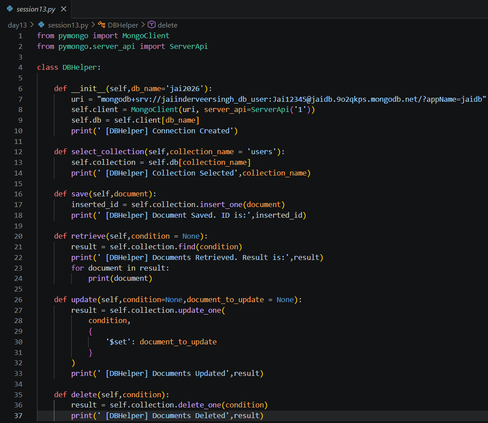
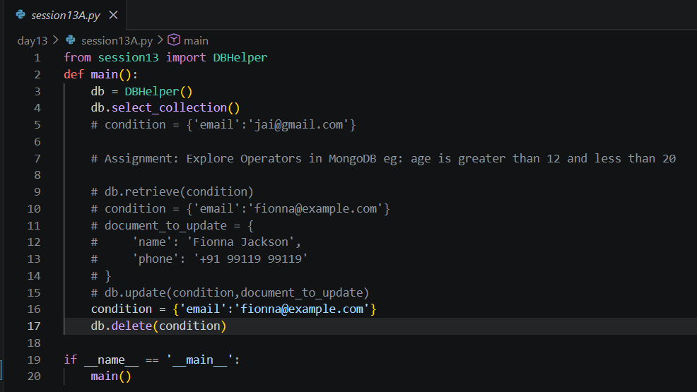
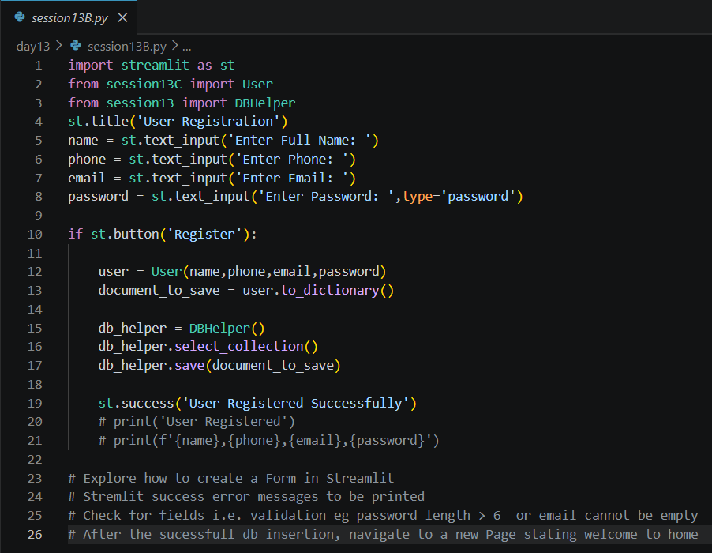
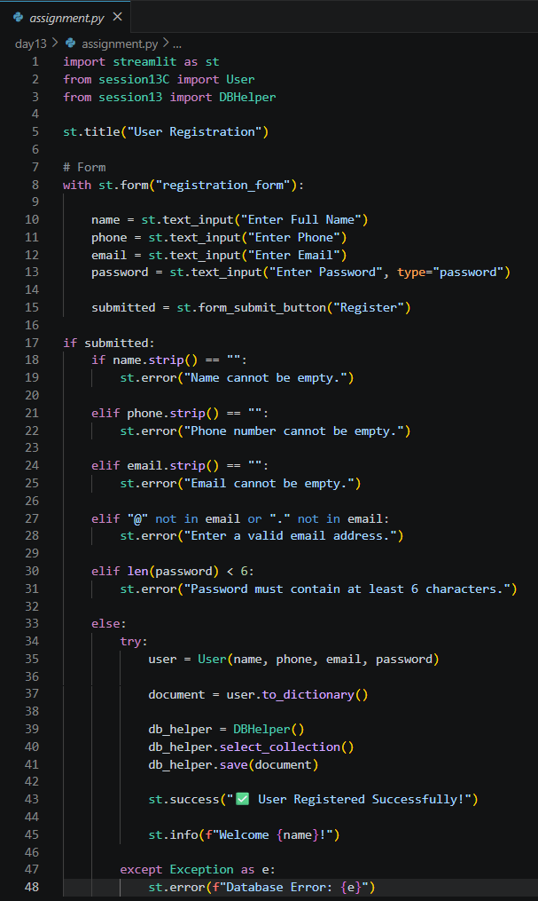
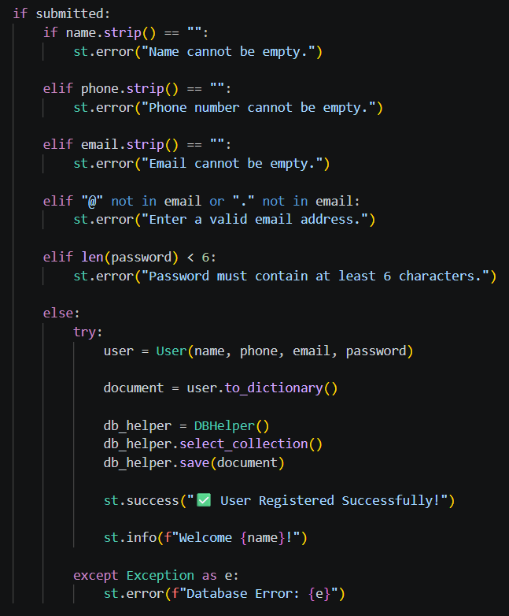
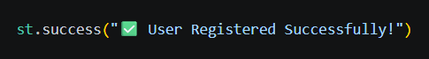

Date: 13th July 2026
Duration: 2 Hours
Training Company: Auribises Technologies
Trainer: Ishant Kumar
Day 13 focused on expanding our MongoDB knowledge by implementing complete CRUD (Create, Read, Update, Delete) operations and introducing Streamlit for building interactive web applications. Instead of interacting with the application through the terminal, we created a graphical user interface that allowed users to register through a web form while storing their information directly in MongoDB.
The session combined database programming, Object-Oriented Programming, and frontend development using Streamlit, giving us our first experience in developing a full-stack style Python application.
The first part of the session focused on extending the previously created DBHelper class by implementing CRUD operations. In addition to inserting new documents, we learned how to retrieve documents using search conditions, update existing records, and delete unwanted documents from a MongoDB collection.
These operations form the foundation of database-driven applications, enabling programs to manage information efficiently throughout an application's lifecycle.

After implementing the CRUD methods, we created a separate program to test different database operations. Using various search conditions, we experimented with retrieving user documents, updating existing information, and deleting records from the MongoDB collection.
This practical exercise demonstrated how individual CRUD operations interact with MongoDB documents and reinforced the importance of separating database logic from application code.

The second half of the session introduced Streamlit, a Python framework for building interactive web applications with minimal code. Instead of creating console-based programs, we developed a simple web interface that accepted user information through text fields and buttons.
The trainer explained how Streamlit automatically converts Python scripts into responsive web applications, making it an excellent framework for rapidly developing dashboards, AI tools, and data-driven applications.

Using Streamlit, we developed a simple User Registration application that collected user information such as name, phone number, email address, and password through an interactive web interface. After submitting the form, the entered information was converted into a Python dictionary and stored directly inside a MongoDB collection using the previously developed DBHelper class.
This activity demonstrated how frontend components and backend database operations can be connected seamlessly, allowing users to interact with a web application while data is processed and stored in the background.
The primary class activity involved creating a basic registration page using Streamlit. The application accepted user details through text input fields and, upon clicking the Register button, created a User object, converted it into a dictionary, and inserted the document into MongoDB.
This exercise demonstrated how Object-Oriented Programming, database connectivity, and web interfaces can be combined to build complete Python applications with minimal code.
The assignment was to enhance the registration application by replacing individual input fields with a proper Streamlit Form. Additional improvements included validating user input, displaying appropriate success and error messages, and ensuring that invalid data could not be stored inside the database.
The trainer also encouraged us to explore navigation after successful registration, helping us understand how larger Streamlit applications can be organized into multiple pages.
For my implementation, I redesigned the registration page using st.form(), creating a cleaner
and more structured user interface. Before storing any information, the application validates each field by
checking for empty inputs, verifying the email format, and ensuring that passwords contain at least six
characters.
Only after successful validation is the user object created and saved into MongoDB. The application then displays a confirmation message along with a personalized welcome message, while any database-related exceptions are handled gracefully using error notifications.



st.form().Day 13 was one of the most exciting sessions because it transformed our console-based Python programs into interactive web applications using Streamlit. Seeing a Python script become a functional web interface with only a few lines of code demonstrated how quickly user-friendly applications can be developed using modern Python frameworks.
Another important learning experience was implementing complete CRUD operations in MongoDB. Understanding how to retrieve, update, and delete documents completed the database workflow that began in the previous session. This made the application much more practical and closer to how real-world software manages user information.
The assignment was particularly rewarding because it encouraged us to improve the original implementation rather than simply reproducing it. By replacing individual input fields with a proper Streamlit form, adding input validation, and displaying meaningful success and error messages, I gained a better appreciation for user experience and application reliability. Overall, this session marked an important step toward developing complete database-driven web applications using Python.
The next session will continue expanding our Streamlit application by improving database interactions, building reusable backend components, and introducing more advanced features that will eventually lead to developing an Agentic AI-powered application.